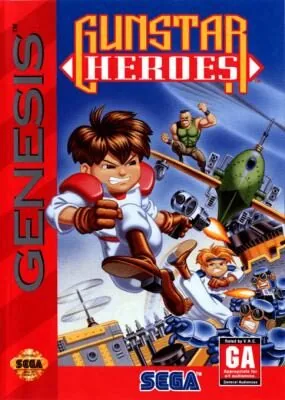

Mega Drive
Gunstar Heroes
- Año: 1993
- Desarrollador: Treasure
- Género: Beat 'em up / Acción
- Jugadores: 2 jugadores
¡El caos se ha desatado en el planeta Gunstar-9!
El loco Coronel Red ha descubierto cuatro cristales que encierran a un ser letal llamado GoldenSilver, ¡y planea soltarlo contra la población del planeta! Hay que detenerlo. Entran en escena... ¡los Gunstar Heroes, Red y Blue!
¡Desata una lluvia de disparos sobre el ejército del Coronel y no dejes que reviva a GoldenSilver! El destino de Gunstar-9 está en tus manos.
Controles
Mando de Mega Drive: A B C abajo y, en los juegos de 6 botones, X Y Z arriba. Es el reparto general de la Mega Drive en esta máquina.
| Panel | Juego |
|---|---|
 | A |
 | B |
 | C |
 | X (solo juegos de 6 botones) |
 | Y (solo juegos de 6 botones) |
 | Z (solo juegos de 6 botones) |
 | Start |
 + +  | Salir del juego |
El panel en Mega Drive


Argumento
Recopilado de internet (2026-11-03). Lo marcado con ⚠️ no está probado en la bartop.
En el planeta Gunstar-9, el loco Coronel Red ha encontrado cuatro gemas que encierran a un ser letal, GoldenSilver, y planea soltarlo contra la población. Los Gunstar Heroes, Red y Blue, tienen que pararle e impedir que el imperio reúna las gemas.
Final: tras recuperar a Yellow y llegar a la nave espacial del imperio, los Gunstar se enfrentan a GoldenSilver.
Fuentes
Wikipedia · descripción de la ficha (gamelist) · Jimmy Longplays
Jugabilidad
Recopilado de internet (2026-11-03). Lo marcado con ⚠️ no está probado en la bartop.
- Tipo de juego: disparos con desplazamiento lateral (run and gun) de Treasure (1993), al estilo de Contra. Uno o dos jugadores a la vez. Siete fases; las cuatro primeras, en el orden que se quiera.
- Disparo libre o fijo: al empezar se elige si el personaje se mueve mientras dispara (libre) o se queda quieto (fijo).
- Armas combinables: cuatro tipos (Force, Lightning, Chaser y Fire) que se combinan de dos en dos (ver «Objetos»).
- Acrobacias: saltar, deslizarse, agarrar y lanzar enemigos.
- Vitalidad: al acabar cada fase, sube la vida máxima.
- Fases distintas: de izquierda a derecha, en vagoneta por las paredes, en helicóptero o en un tablero de dados.
- Dificultad: fácil, normal, difícil y experto.
Botones según las guías (⚠️ por confirmar; se pueden cambiar en las opciones)
| Mando de Mega Drive | Panel | Acción |
|---|---|---|
| A | B | Cambiar de arma |
| B | A | Disparar |
| C | R | Saltar |
| B + dirección (junto a un enemigo) | A + dirección | Agarrar y lanzar |
| Abajo + C | Abajo + R | Deslizarse |
| En el aire: C | En el aire: R | Ataque en salto |
| En el aire: abajo + C | En el aire: abajo + R | Patada en salto |
Fuentes
Guía de niveles
Recopilado de internet (2026-11-03). Lo marcado con ⚠️ no está probado en la bartop.
| Fase | Nombre | Jefe |
|---|---|---|
| 1 | Las ruinas antiguas | Pinky Roader |
| 2 | La mina subterránea | Seven Force |
| 3 | El acorazado volador | Orange |
| 4 | La fortaleza extraña (el tablero de dados) | Final Great Soldier |
| 5 | Rescatar a Yellow | Core Guard System |
| 6 | La nave espacial del imperio | Repaso de jefes · Green |
| Final | | GoldenSilver |
⚠️ Los nombres de las fases 5 y 6 son los de los capítulos del vídeo de Jimmy Longplays.
Fuentes
Objetos
Recopilado de internet (2026-11-03). Lo marcado con ⚠️ no está probado en la bartop.
Las cuatro armas de partida:
| Arma | Qué hace |
|---|---|
| Force | Ráfaga rápida de balas |
| Lightning | Láser que atraviesa enemigos y paredes |
| Chaser | Balas que persiguen al enemigo |
| Fire | Chorro de fuego corto pero potente |
Combinaciones (dos armas a la vez):
| Combinación | Resultado |
|---|---|
| Force + Force | Doble bola de fuego |
| Force + Lightning | Rayo rápido |
| Force + Chaser | Rayo Force teledirigido |
| Force + Fire | Bola de fuego explosiva |
| Lightning + Lightning | Mega-Bolt |
| Lightning + Chaser | Rayo teledirigido |
| Lightning + Fire | Sable de luz |
| Chaser + Chaser | Star Chaser |
| Chaser + Fire | Bola de fuego teledirigida |
| Fire + Fire | Ultralanzallamas |
Fuentes
Trucos y secretos
Recopilado de internet (2026-11-03). Lo marcado con ⚠️ no está probado en la bartop.
Secretos
- Orden libre: las cuatro primeras fases se pueden jugar en cualquier orden.
- Dos jugadores: se juega a la vez, con Red y Blue.
⚠️ No he encontrado trucos de botones fiables de la versión de Mega Drive.
Fuentes
Longplay

Partida completa de la versión Mega Drive americana (50 min), de LongplayArchive: Longplay of Gunstar Heroes.
Pulsa el minuto de un nivel para ver el vídeo desde ese punto.